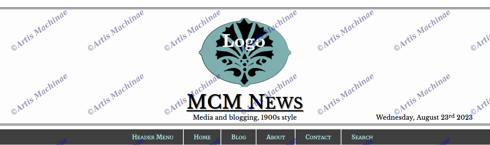

The header with responsive layout
<!DOCTYPE html>
<html lang="en">
<head>
<meta charset="UTF-8">
<meta http-equiv="X-UA-Compatible" content="IE=edge">
<meta name="viewport" content="width=device-width, initial-scale=1.0">
<?php wp_head();?>
</head>
<body>
<button onclick="scrollToTop()" id="topButton" title="To Top of Page">
⇡
</button>
<nav>
<div class="fp-titlegrid-mcm">
<!-- conditional row if front page to display big logo -->
<div>
<?php
if(is_front_page( ))
the_custom_logo();
?>
</div>
<!-- next row -->
<div class="trigrid-mcm">
<!-- trigrid left column -->
<div>
<!-- if not front page, load mini-logo -->
<?php
if(!is_front_page( ))
if ( has_custom_logo() ) : ?>
<a href="<?php echo esc_url( home_url( '/' ) );?>" rel="home">
<img class="align-left-mcm logomin-mcm" src="<?php $custom_logo_id = get_theme_mod( 'custom_logo' );
$image = wp_get_attachment_image_src( $custom_logo_id , 'full' );
echo $image[0];?>"
>
</a>
<?php else: ?>
<div> </div>
<?php endif;?>
</div>
<!-- trigrid center column -->
<div>
<!-- load sitename -->
<p class="sitename-mcm">
<a href="<?php echo esc_url( home_url( '/' ) );?>"
rel="home"><?php bloginfo( 'name' );?>
</a>
</p>
<!-- load site description IF frontpage -->
<?php if(is_front_page( )):?>
<p><a href="<?php echo esc_url( home_url( '/' ) );?>"
rel="home"><?php bloginfo( 'description' );?>
</a></p>
<?php endif;?>
</div>
<!-- trigrid right column -->
<div class="align-right-mcm">
<?php echo wp_date('l\, F j\<\s\u\p\>S\<\/\s\u\p\> Y');?>
</div>
</div>
</div>
<div class="topmenu-wrapper-mcmnews">
<?php
//menu generated by WP
wp_nav_menu( array(
'menu' => 'header-menu',
'theme_location' => 'header-menu',
'menu_class' => "topmenu-mcmnews",
) );
?>
<button class="ham-icon-amach">
<span class="menu-icon-amach">≡</span>
<span class="closemenu-icon-amach">✕</span>
</button>
<?php
//menu generated by WP
wp_nav_menu( array(
'menu' => 'mobile-menu',
'theme_location' => 'mobile-menu',
'container' => false,
'menu_class' => 'mbl-menu-amach'
) );
?>
</div>